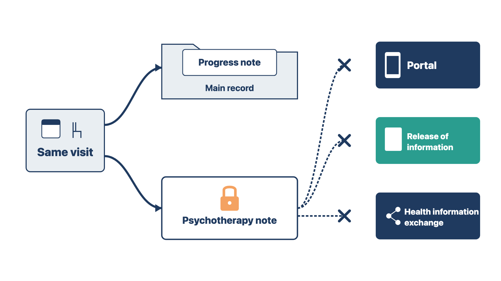
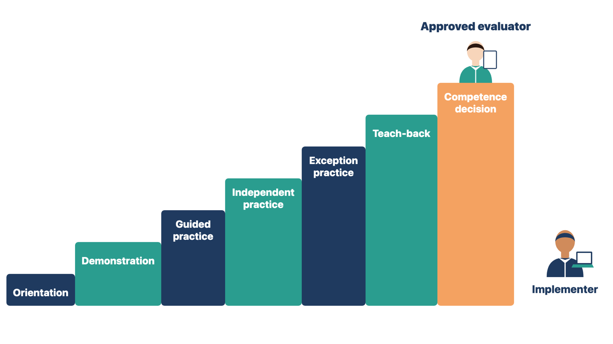

Specialty work has its own risks. You cannot learn every specialty, but you can ask the questions that expose the risks.
Specialty templates and workflows need the person who does and owns the work. You do not need to become a cardiologist, therapist, or surgeon. Ask these questions:
Use the answers to build scenarios and training with the specialist.
Rule: Build specialty scenarios with the specialist who owns the work.
Example A. For a cardiology stress test, the cardiologist tells you which earlier results must be present. Example B. For a diabetes education visit, the educator tells you which device readings must be acknowledged. The same questions work for very different specialties.
Check yourself
Behavioral health records can carry extra federal protection. If the build shows them too widely, the clinic may share protected notes without permission.
Behavioral health adds two questions: what kind of note is this, and who may see it? You do not decide how the federal rules apply. You make sure the right people decide, and that the build and training match their decision.
HIPAA is the Health Insurance Portability and Accountability Act, the federal privacy law for health information. Under HIPAA, psychotherapy notes are a mental health professional's notes about the talk in a counseling session. They are kept apart from the rest of the medical record. They do not include medicines, session times, test results, or summaries of diagnosis, treatment plan, symptoms, or progress. Those belong in the regular record.
With few exceptions, sharing psychotherapy notes needs the patient's written permission. This applies even when another provider is treating the patient. Patients also have no HIPAA right to see these notes.
A note type labeled "psychotherapy note" does not create this protection by itself. The protection depends on what the note holds and on keeping it apart. The clinician and the privacy officer decide whether the practice will use such notes, and how.
A federal rule, 42 CFR Part 2, protects records from federally assisted substance use disorder (SUD) programs. The U.S. Department of Health and Human Services (HHS) changed Part 2 in a 2024 final rule. Clinics had to follow most of it by February 16, 2026. Under the rule:
Whether a clinic is a Part 2 program is a legal question. The privacy officer and legal counsel answer it.
| Question you ask | Who decides |
|---|---|
| Will clinicians keep separate psychotherapy or SUD counseling notes? | Behavioral health clinical lead, with the privacy officer |
| Is any part of the practice a Part 2 program? | Privacy officer, with legal counsel |
| Which roles can open each note type? | Privacy officer; practice manager approves the role model |
| Which notes may go to the portal, release of information, or a health information exchange? | Privacy officer and records lead |
| How do minors, guardians, and proxy portal users fit? | Privacy officer (see Module 4, "Plan for sensitive records") |

Build the approved note types and role access. Write scenarios that prove the controls work. Train each role on what it will and will not see. Then test that the protected note stays out of every place it should not reach.
Rule: The privacy officer and clinical lead decide behavioral health access; you build it, train it, and test it.
Example A. A builder asks whether Lakeshore is a Part 2 program. You send the question to the privacy officer and hold the affected build. Example B. An access test shows a psychotherapy note title on the patient portal. The approved design already excludes it, so you log a defect. In the first case no decision exists yet; in the second the decision exists and the build breaks it.
Check yourself
Specialized work rarely ends on one screen. If training stops at the click, no one learns who notices when the next step fails.
A visit note, for example, may start orders, follow-up, coding review, claims, patient messages, and quality reports. For each scenario, ask:
This keeps specialized training from becoming a set of isolated clicks.
Rule: For every scenario, name who notices a missed handoff and what evidence QC will check.
Example A. A diabetes visit orders an A1c test. The trace shows no one named to notice a missed result review. You ask the clinical lead to name one before class. Example B. A referral goes out, and the referral coordinator watches for the specialist's reply. That trace is complete.
Check yourself
A demonstration alone does not prove anyone can do the work. Specialized roles need to show they can handle failures, and the right person must judge their competence.
Specialized training works best in stages:

Rule: The approved evaluator makes the competence decision; you record it.
Example A. The medical director is the evaluator for provider notes. You give her your observations, and she decides. Example B. The nurse lead is the evaluator for triage. She watches each nurse's exception case and signs the record. In both cases, you supply evidence and the evaluator decides.
Check yourself
Specialized sessions will expose missed details. If you fix them on the spot, untested changes reach clinical work.
Use the controlled routing from Module 5:
Record homework with a deliverable, owner, approver, date, and check. Do not leave the team with "finish the clinical templates."
Before the module closes, collect the domain approval and the QC evidence for each specialized workflow.
Rule: Route each finding by what it changes, not by where it appears on screen.
Example A. A nurse spots "Schedual follow-up" on a cardiology screen. It is a plain label, so you fix it under the low-risk process and send it to QC. Example B. The same nurse asks to add a required field to the cardiology template. That changes clinical content, so it goes to the clinical owner. Both are on the same screen, but they change different things.
Check yourself